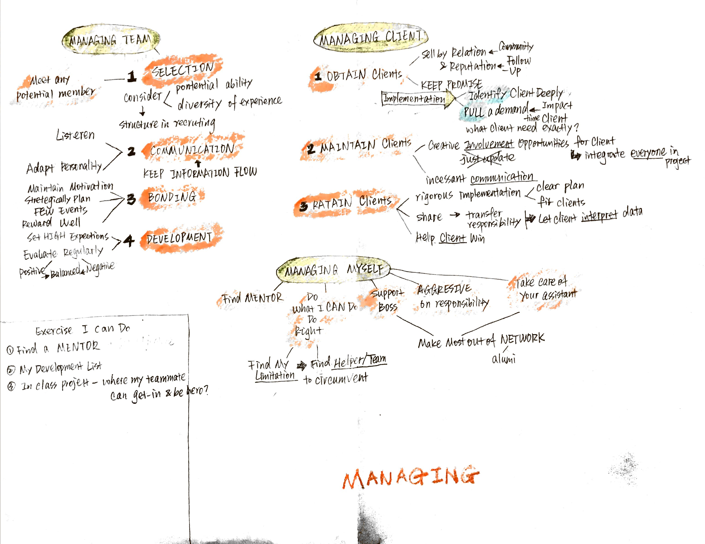

Reading Notes for "The McKinsey Mind" written by Ethan M. Rasiel and Paul N. Friga
My reading notes for the book "The McKinsey Mind", written by Ethan M. Rasiel and Paul N. Friga. This book described some ideas McKinsey holding when encountering different business challenges.
Main Frame
Introduction from page 16:
Analyzing


Presenting

Managing

What I Can Do
In Case Practice
Analysis a Copy of Annual Report
- Start with hypothesis
- Create MECE Tree: Logic Tree + Issue Tree
- So-What test in my analysis
- Video my presentation
In Business Practice
- Find a mentor
- Create an interview guide
- Write a thank-you letter in networking events
In Project Work
- Let everyone in team involving in from start
- Let teammates feel like hero
Comments
Comments powered by Disqus